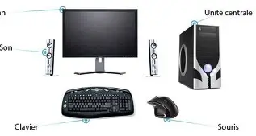

L’écran L’écran est un périphérique de sortie. Son rôle consiste essentiellement à afficher les diverses informations qui sont envoyées par l’unité centrale. En d’autres termes, l’écran permet de visionner les données informatiques sous forme visuelle. Le clavier Le clavier est classé dans la catégorie des périphériques d’entrée. Il est nécessaire de raccorder un clavier à un ordinateur si l’on souhaite faire des saisies informatiques (que ce soit des textes, des chiffres, des caractères, ou autres.). La souris Il s’agit également d’un périphérique d’entrée. La souris est essentiellement un dispositif de pointage. Elle permet essentiellement de déplacer le curseur (la petite flèche ou petite main qui est affichée sur l’écran). Elle permet ensuite de sélectionner et de cliquer sur les éléments qui sont stockés sur l’ordinateur auxquels elle est reliée pour entamer diverses actions. Le clic permet, par exemple, d’ouvrir un menu ou de sélectionner un élément.
| Description | Image | Prix |
| les périphérique des ordinateurs sont consus pour, faciliter l'usage avec celui-ci, est surtout pouvoir naviguée beaucoup plus facilement. . |  | Tout dépendera des périphérique, et des modéles que vou choissiserai les prix peuvent ne pas du tout ce ressenblée mais en générale pour un prix moyen cela est compter entre environ 10a 200 Euros facile. |